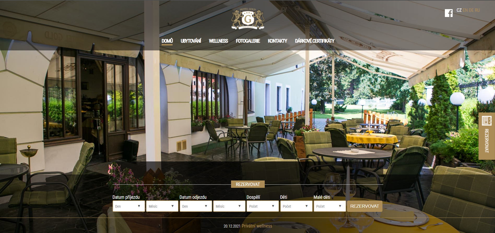

Projekt
Produkt
Redesign stránek Hotelu Gold v Českém Krumlově. Stávající design je
již nevyhovující.
Trvání projektu
Březen 2022 - květen 2022
Problém
1. Stávající web obsahuje prvky, jež jsou pro uživatele nepřehledné a
některé jsou víceméně irelevantní vzhledem k povaze webu (například
dlaždice s informacemi o ateliéru Seidel a zámku Český Krumlov).
2. Aktualita o nově otevřném wellness je prakticky nečitelná.
3. UI
4. Neaktuální informace
5. Galerie obsahuje fotky v malém rozlišení

Cíl projektu
1. Vytvořit příjemnější UI
2. Zaktualizovat informace
3. Vytvořit uživatelsky přívětivější prostředí
Moje role
UX/UI designer od počáteční do konečné fáze projektu:
Uživatelský výzkum · vedení rozhovorů · paper and digital wireframes ·
lo-fi a hi-fi prototypy · řízení uživatelského testování · zohlednění
dostupnosti a opakování návrhů
Výzkum
Uživatelský výzkum
Vedení rozhovorů a vytváření empathy maps. Uživatelé byli ve věkovém
rozmezí 18 - 56 let, bez jiných požadavků, vzhledem k tomu, že web je
určen pro širokou veřejnost.
Pain points
1.
2.
3.
Persona
Cesta uživatele
Design
Paper wireframes
Digital wireframes
Low fidelity prototyp
Uživatelské testování
Zdokonalení designu